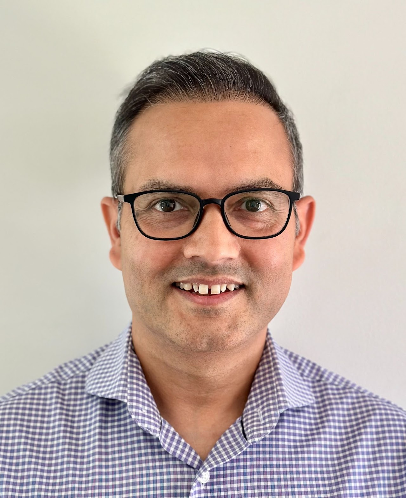
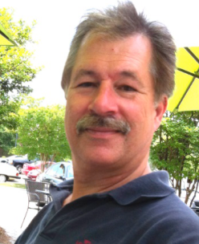
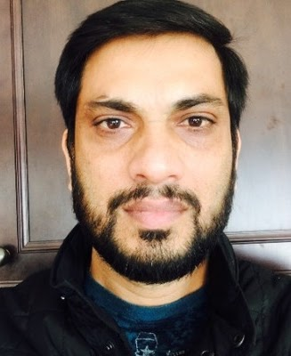
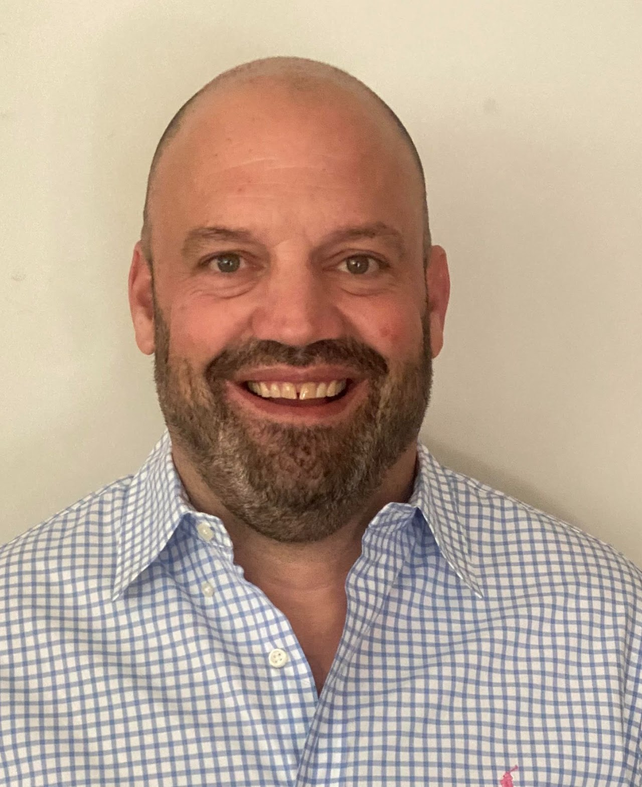

Data-driven safety assessments for medical devices and diagnostic products.
At 2SD Toxicology Services LLC, we specialize in delivering data-driven safety assessments for medical devices and diagnostic products. Our approach ensures thorough evaluations, backed by rigorous statistical analysis and adherence to the latest regulatory standards, including ISO, FDA, and EU-MDR guidelines.
Our team is comprised of highly skilled professionals, including laboratory scientists, analytical chemists and board-certified toxicologists, who share a common goal of prioritizing patient safety in their work. With years of experience in biomedical research, we offer our clients confidence and guidance to ensure their products meet the highest safety standards.
To further support our clients, we have expanded our capabilities with a state-of-the-art laboratory facility in RTP, North Carolina. Equipped with high-resolution mass spectrometry (HRMS), we offer chemical characterization studies that help medical device manufacturers gain a deeper understanding of their products' composition and properties.
Partner with us to ensure the safety, quality, and success of your products.
Meet our experts — leaders in toxicology, analytical chemistry, and regulatory science

Dr. Dhakal has over a decade of cumulative experience in the field of toxicology, with a specific focus on ensuring the safety of medical devices and diagnostic products...
Read moreDr. Dhakal has extensive experience working with CROs, including iuvo Bioscience, LabCorp, and Quality Laboratory Services. He brings deep expertise in medical device biocompatibility evaluation, extractables and leachables studies, and toxicological risk assessment.
Dr. Dhakal holds a degree in Veterinary Medicine, a Master's in Public Health in Infectious Diseases from Kansas State University, and a PhD in Toxicology from the University of Iowa. He also worked as a postdoctoral researcher at the University of California, where he focused on the neurotoxicity of organophosphates and developmental toxicity of polychlorinated biphenyls. He is a diplomate of the American Board of Toxicology (ABT) since 2019 and is certified as a clinical/toxicological chemist by the National Registry of Certified Chemists (NRCC) since 2017.

Dr. Voyksner serves as an Adjunct Professor at both the North Carolina State University College of Veterinary Medicine and the University of North Carolina Eshelman School of Pharmacy...
Read moreHis research in analytical chemistry, with a focus on mass spectrometry, has led to 100 peer-reviewed publications and over 250 scientific presentations at conferences. He has been a member of the Board of Directors for the American Society for Mass Spectrometry (ASMS) and serves on the organizing committee for the Montreux LC/MS Symposium. Over the past 30 years, Dr. Voyksner has taught more than 156 courses on analytical mass spectrometry.
Raya Martinez is a biomedical engineer and project manager specializing in biocompatibility, regulatory compliance, and risk assessment for medical devices...
Read moreWith expertise in Lean Six Sigma and process development, she continuously improves processes efficiency and ensures regulatory readiness. Raya has experience in quality control, technical and scientific report generation, and biomaterials engineering. She holds an M.S. in Technology Management from North Carolina A&T State University and a B.S. in Biomedical and Health Sciences Engineering from UNC-Chapel Hill and NC State University. Raya is certified as a Lean Six Sigma Green Belt and holds the Google Project Management Professional Certification.

Dr. Vavilala is an experienced Senior Executive with both General Management and Business Development experience in the pharmaceutical/CRO industry...
Read moreDr. Vavilala has broad knowledge of the drug development process from discovery to clinical research gained through more than 20 years in the CRO/pharmaceutical sector. He is the founder and CEO of Wake Diagnostics Inc. Prior to that, he founded HDH Pharma Inc. He has co-authored over 20 publications, patents, and book chapters. Dr. Vavilala received his Ph.D. from IICT, India and was a Post-Doctoral Research Fellow at The Scripps Research Institute.

Greg brings over 15 years of extensive experience in the pharmaceutical and diagnostic lab industries...
Read moreGreg has a proven track record of driving revenue growth, forging strategic partnerships, and launching innovative pharmaceutical, diagnostic and toxicology fields. Previously, Greg founded and grew a successful landscape construction firm and held significant roles at Covidien and Bristol-Myers Squibb. Greg holds a Bachelor of Science in Marketing from Northern Illinois University.
Dr. Timilsina is a Computational Toxicologist with expertise in machine learning, biomedical data analytics, and toxicological risk assessments...
Read moreHe previously served as a Postdoctoral Researcher at the Insight Centre for Data Analytics, contributing to the EU CLARIFY H2020 project. Mohan also worked as a Software Engineer at the United Nations University. His research has been published in leading journals including Nature Scientific Reports, and IEEE/ACM TCBB. He has received multiple prestigious fellowships from Science Foundation Ireland.
Talk to our board-certified toxicologists and analytical chemists today.
📞 530-405-7200 — Call or Email Us